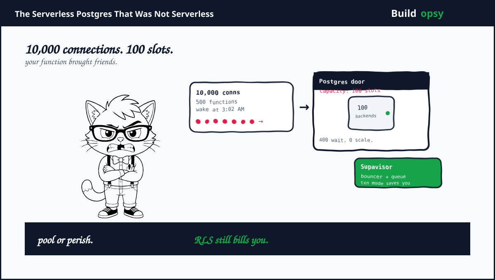

1. The 3 AM Connection Storm
Serverless functions love to forget. A deploy finishes at midnight. A cron fires at 3 AM. Five hundred function instances wake at the same second. Each imports a Postgres client and opens a connection. Postgres allows roughly one hundred concurrent backends per small instance before it starts refusing work. The math is not subtle. Five hundred clients request a slot that fits one hundred. Four hundred requests queue or fail while your dashboard insists everything is serverless.
The failure mode is boring and expensive. Connections are not cheap handles. Each backend consumes memory and pins buffer state. A flood of idle connections holds RAM that cannot serve reads. A flood of active queries exhausts CPU while the pool sits full. Autoscaling adds more functions which create more connections which makes availability worse. The system collapses under its own good intentions.
2. Why Supabase Is the Right Autopsy
Supabase crossed two million provisioned Postgres databases in 2025 and reported more than thirty billion weekly API requests across the platform. It raised roughly three hundred ninety eight million dollars as a venture backed database company and published its architecture decisions instead of hiding them behind a status page.
That openness is rare. Supabase explained why it replaced PgBouncer with Supavisor, a pooler written in Elixir for multi tenant scale. It documented transaction mode, session mode, prepared statement limits, realtime replication slots and Row Level Security. It also shipped branching, read replicas, connection string variants and a dashboard that makes the pool visible. A vendor that explains the pooler is a vendor that expects you to understand the trade.
"PgBouncer was never designed for a million Postgres connections across thousands of tenants" Supabase wrote when it launched Supavisor. At that scale pooling is not a config tweak. It is a product.
Supabase is also honest about the tension. Postgres is transactional and durable. Serverless workloads are bursty and forgetful. Putting a Postgres wire protocol directly behind an autoscaling fleet without a pooler is how a side project becomes a postmortem. This teardown follows the pooler to find the cost.
3. Reconstructing the Machine
A request reaches Supabase through PostgREST for table APIs or through the realtime service for subscriptions. Auth resolves the JWT and then enforces Row Level Security. Supavisor sits in front of Postgres and decides which backend gets the query. Edge Functions run near the user and reuse connections through the pooler rather than holding private ones. Storage plus vector plus queue workloads fan out from the same logical database but often travel separate paths.
The pool has three modes that matter. Session mode gives each client a dedicated backend for the lifetime of the session. Transaction mode assigns a backend per transaction and returns it afterwards. Statement pooling is stricter still. Supabase defaults and guidance push most serverless workloads toward transaction mode because it reuses backends far more aggressively. The cost is feature loss. Anything that assumes sticky session state like prepared statements, advisory locks or temp tables breaks in transaction mode unless reworked.
Realtime listens to the Postgres write ahead log through replication slots. Each subscribed table creates logical decoding work. Ten thousand realtime subscribers do not look like ten thousand idle WebSockets. They look like ten thousand consumers of change events that must be filtered and fanned out without letting one slot stall the primary. The most expensive WebSocket is the one tied to a lagging slot.
4. Row Level Security: The Tax You Did Not Benchmark
Row Level Security makes Postgres the policy engine. A rule like auth uid equals owner id looks simple in the docs and runs on every row that a query touches. Supabase enables RLS by default for good reason. It is the difference between secure by default and breach by forgotten where clause.
The tax appears under load. A policy that invokes a function, performs a join or checks a membership table adds work to every execution. An index that existed for the base query may not help the policy predicate. Explain analyze will show extra filter steps, extra calls and extra buffer hits that were invisible in local development. One secure query stays fast. One million secure queries pay the policy in full.
The fix is not to disable RLS. It is to make RLS index aware. Keep policies as simple equality checks against indexed columns, materialize auth claims in a JWT that maps directly to the indexed column, avoid joins inside policies and benchmark with production shaped data. A policy test with ten rows is theater. A policy test with ten million rows is engineering. The database will happily run your join per row until the invoice does the explaining.
5. The RPS Model: How Many Queries Does Serverless Make
Supabase does not publish per project RPS in public filings, so the following is a scenario that stresses pooling rather than a leak.
Assume a tenanted fleet with one hundred thousand active projects on a busy day. Assume ten percent of those projects see concurrent traffic in any given minute. That gives ten thousand warm projects. Assume each warm project averages five requests per second with Edge Functions and client SDKs. Platform average becomes fifty thousand requests per second before peak multipliers.
Peak matters more than average for connections. Assume a six times peak burst when cron schedules, webhooks and cache stampedes align. Modeled peak hits three hundred thousand requests per second across the fleet. With serverless functions that each open a fresh client, naive direct connections would demand tens of thousands of Postgres backends per underlying host without pooling. With transaction mode pooling at twenty five percent connection fan in, origin Postgres backends see roughly seventy five thousand concurrent transactions per second in the peak model before coalescing.
| Workload | Assumption | Modeled result |
|---|---|---|
| Warm projects per minute | 10% of 100k active | 10k projects |
| Average RPS | 5 rps per warm project | 50k RPS |
| Peak RPS | 6x burst multiplier | 300k RPS |
| Naive backends without pooling | 1 backend per concurrent request | 300k backends |
| Pooled origin transactions | 25% fan in via Supavisor | 75k txn per sec peak |
6. The Cost Model: What Pooling Actually Saves
Host a Postgres fleet for this model. Assume eight hundred provisioned databases spread across regions with primary plus replica, backups and observability. At one hundred fifty dollars per month blended for a small project, platform base compute is one hundred twenty thousand dollars per month. Add pooler fleet, routing, auth and edge capacity at seventy thousand per month.
Database memory drives the pooled bill. Postgres backends consume resident memory. Assume one hundred thousand concurrent transactions touching hot data with buffer hits. Allocate managed memory pool at two hundred thousand dollars per month including cache. Add replication and storage IO at ninety thousand per month. Add realtime fan out and WebSocket layer at sixty thousand per month. Total scenario envelope lands around five hundred forty thousand dollars per month or roughly eighteen thousand per day.
Without pooling, directly provisioned backends would force larger instance classes to fit the same concurrency. Doubling backend capacity plus larger buffer pools could raise memory and compute by three hundred thousand to five hundred thousand dollars per month while still failing at peak connection burst. Pooling does not make Postgres cheap. It decides how much Postgres you need to run at all.
| Cost center | Modeled monthly | What moves it |
|---|---|---|
| Postgres base fleet | $120k | instance class and count |
| Supavisor and routing | $70k | pool size and regions |
| Memory and cache | $200k | backend count and hit rate |
| Replication and storage IO | $90k | slots and write rate |
| Realtime fan out | $60k | subscriptions and filters |
| Total | $540k |
7. The One Million RPS Thought Experiment
Normalize to one million API requests per second for one month. A month holds 2,592,000 seconds. Assume each request carries one kilobyte inbound and two kilobytes outbound and creates at least one Postgres transaction. Logical data crossing the edge is roughly three million kilobytes per second or about 7.3 petabytes per month before replication overhead.
In a direct connection shape, assume origin cost of $0.0000014 per transaction for Postgres compute, buffer management and platform overhead. Current shaped bill is 1,000,000 times 2,592,000 times $0.0000014 equals $3.63M per month.
My proposed pooled shape reuses connections, enables statement level caching for safe queries, routes hot reads to replicas and drops RLS overhead by twenty percent through policy indexes. Assume thirty percent of requests hit origin Postgres and origin rate falls to $0.0000010 per transaction. Core origin work becomes 300,000 times 2,592,000 times $0.0000010 equals $777,600 per month. Add three hundred fifty thousand dollars for pooler fleet, edge, observability and replication slot management. Proposed envelope is about $1.13M per month.
| At 1M RPS | Direct connections | Pooled Supavisor shape |
|---|---|---|
| Origin transactions | 1,000,000 per sec | 300,000 per sec after pooling |
| Modeled rate | $0.0000014 per txn | $0.0000010 per txn |
| Core origin work | $3.63M | $778k |
| Pooler and safety layer | Included | $350k |
| Modeled monthly total | $3.63M | $1.13M |
| Difference | $2.50M per month, about 69 percent lower | |
ten thousand at once
reuse backends
buffer hot
off primary
lag is bill
per subscriber
origin avoided
metered cost
This figure appears after the cost model on purpose. First count the connections. Then decide which request deserves a real backend.
8. How I Would Cut the Bill Without Cutting the Feature
Default to transaction mode pooling. Use session mode only where you can name the feature that needs sticky state. Transaction mode reuses backends far better and exposes the real cost of stateful assumptions. Add a CI check that fails a PR which introduces prepared statements without a pooling review.
Make RLS index first. Keep policies as direct equality on an indexed column derived from the JWT. Materialize org or owner id as a real column with an index. Avoid joins inside policies. Benchmark policies against production sized tables, not empty seed data.
Cache safe reads outside Postgres. PostgREST reads that do not need a fresh transaction can serve from edge cache with a short TTL keyed by query and auth scope. Auth aware caching is harder than public caching but ten times more valuable for a fleet that pretends to be serverless. The same edge thinking cut origin work in my Vercel teardown and in my Lovable teardown.
Isolate realtime by consumer tier. Separate low latency broadcast streams from analytics style listeners. Rate limit slot consumers per project, alert on slot lag and drop slow subscribers before one lagging slot stalls the primary. The most polite way to destroy a database is a well intentioned consumer that never acknowledges.
Route heavy reads to replicas by intent. Tag queries that can tolerate replica lag and route them explicitly. Keep writes and strong consistency reads on primary. A single connection string for every query forces primary to pay for work a replica could do for free.
Budget branches like production. Database branching is wonderful for previews and terrifying for the bill. Expire idle branches automatically, compress WAL retention and alert on fork count. A branch that lives forever is not a preview. It is a tenant that forgot the door code.
9. The Verdict
Supabase earned its fleet the hard way. It gives every project a real Postgres, a real extension market and a real wire protocol, then accepts the burden of pooling that fleet for a world that spawns functions like confetti. Supavisor is the admission that hosted Postgres plus autoscaling functions needs a bouncer, a queue and a shared vocabulary for connections.
The cost is not Postgres itself. It is the mismatch between serverless burst and transactional backends plus policy work evaluated per row at platform scale. Pooling decides how many backends you run. Indexed RLS decides how much work each backend does. Replica routing decides whether the primary pays for everything. Get those three right and the bill reflects value rather than waste.
Serverless Postgres is not a database without limits. It is Postgres with a pooler you finally respect.
Sources and Method
Supabase fleet size, Supavisor origin and feature notes come from Supabase blog posts and docs linked below. Postgres connection limits and pooling behavior are documented Postgres mechanics. The RPS and cost model is my own scenario math, not Supabase telemetry or invoices. Use production measurements before capacity decisions.